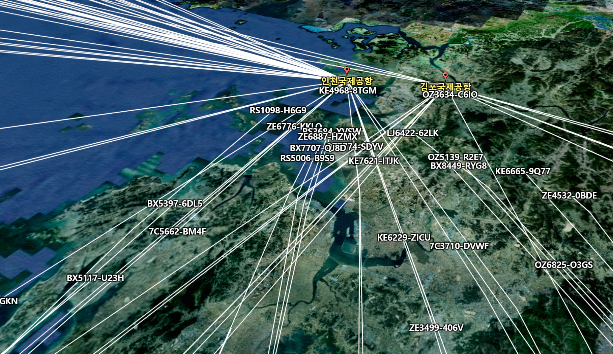

비행 경로 그리기
목차
- 컴포넌트의 비행 경로 시작하기
- U3dCumulativePath 직접 사용하기
- 경로 스타일 설정하기
- 경로 단순화 및 출력 정책 설정하기
- 경로 표시 상태 제어하기
- 기존 비행 이력 그리기
- 비행 경로 정리하기
누적 비행 경로(궤적)는 이동체가 지나온 위치를 계속 연결해 3D로 표현하는 기능입니다.U3dComponentPosition에 경로 생성을 맡기거나 U3dCumulativePath를 직접 생성해 사용할 수 있습니다.
U3dCumulativePath는 경로의 생성, 스타일과 표시 상태를 관리합니다.
경로 좌표를 단순화하는 방법과 화면에 출력할 범위는 pathStyle.tailPolicy로 설정합니다.
- 월드 좌표: GeOnDT가 화면 렌더링에 사용하는 좌표입니다.
app.geographicToVector3()로 위경도 좌표를 변환할 수 있습니다.- 누적 거리: 비행 시작점부터 현재 위치까지 이동한 전체 거리(m)입니다. 새 지점을 추가할 때 이전 값보다 같거나 큰 값을 전달합니다.
- 경로 단순화: 오래 누적된 경로의 일부 좌표를 줄여 메모리와 렌더링 부하를 낮추는 기능입니다.
1. 컴포넌트의 비행 경로 시작하기
U3dMultipleComponentLayer.addPosition으로 이동체를 만들 때 drawCumulativePath를 true로 지정하면 컴포넌트가 이동할 때 경로를 자동으로 생성하고 갱신합니다.setPosition, moveSmoothly 등 컴포넌트의 위치 변경 API를 사용하면 별도로 updatePath를 호출할 필요가 없습니다.

API
U3dMultipleComponentLayer.addPosition(opt) : 레이어에 이동 컴포넌트를 추가하는 함수
매개변수
opt(object) : 컴포넌트 생성 옵션. 필수opt.name(string) : 레이어 안에서 사용할 고유 이름. 필수opt.position(Vector3) : 초기 월드 좌표.geoPosition과 둘 중 하나를 사용opt.geoPosition(GeoPositionVector3) : 초기 위경도 좌표.position과 둘 중 하나를 사용opt.object(string) : 레이어에 등록된 3D 모델 이름. 필수opt.drawCumulativePath(boolean) : 누적 비행 경로(궤적) 생성 여부. true면 생성, false면 생성하지 않는다opt.pathwidth(number) : 초기 경로 너비
반환값
return(U3dComponentPosition) : 생성된 이동 컴포넌트
API
U3dComponentPosition.setCumulativePathStyle(opt) : 컴포넌트가 관리하는 누적 비행 경로(궤적)의 스타일을 설정하는 함수
매개변수
opt(U3dCumulativePath_StyleOpt) : 변경할 경로 스타일. 자세한 항목은 3. 경로 스타일 설정하기 참고. 필수
1. 드론 비행 경로 생성 예제
경로 시작 위치의 오프셋을 모델 크기로 자동 계산하려면 스타일을 설정하기 전에 getBoundingBox()를 호출합니다.drawOffset을 직접 지정하면 bounding box를 이용한 기본값 대신 지정한 값이 사용됩니다.
const geoPosition = {x: 126.924, y: 37.521, z: 300};
const worldPosition = app.geographicToVector3(geoPosition);
const drone = animationLayer.addPosition({
name: 'drone_01',
position: worldPosition,
object: 'drone_model',
speed: 160,
drawCumulativePath: true,
pathwidth: 5
});
drone.getBoundingBox();
drone.setCumulativePathStyle({
color: '#00ffff',
opacity: 0.8,
width: 5,
colorGradation: false,
drawOffset: 0,
positionOffset: {x: 0, y: 0, z: -2},
smooth: false,
tailPolicy: {simplify: true, limitMode: 'distance', limitValue: 5000}
});
// 이후 컴포넌트 이동 API가 누적 비행 경로(궤적)를 자동으로 갱신합니다.
drone.setPosition(app.geographicToVector3({
x: 126.925,
y: 37.522,
z: 320
}));
2. U3dCumulativePath 직접 사용하기
컴포넌트 이동 API를 사용하지 않거나 외부에서 수신한 위치를 직접 그릴 때는 U3dCumulativePath를 생성하고 매 위치 갱신마다 updatePath를 호출합니다.
updatePath에는 월드 좌표와 누적 시간을 전달합니다. 경로는 기록된 좌표로 자체 누적 거리 pathDistance를 계산하므로 외부 누적 거리는 전달하지 않습니다.
API
new GeOnDT.object.U3dCumulativePath(opt) : 누적 비행 경로(궤적)를 생성하는 생성자
매개변수
opt.app(U3dApp) : 좌표 변환과 렌더링에 사용할 앱. 필수opt.scene(Scene) : 경로를 추가할 Three.js 3D 화면 객체. 필수opt.targetName(string) : 경로가 속한 이동체 이름.opt.pathStyle(U3dCumulativePath_StyleOpt) : 경로 스타일opt.initTime(number) : 초기 시간opt.initPositions(U3dCumulativePathPositionData[]) : 최초에 그릴 경로 이력 (경로 초기값). 이력이 없으면 입력하지 않으면 된다.opt.drawOffset(number) : 진행 방향 기준 경로 오프셋(m). 양수는 앞쪽, 음수는 뒤쪽opt.positionOffset(Vector3 | {x, y, z}) : 컴포넌트의 로컬 x, y, z축 기준 경로 위치 보정값(m). 기본값:{x: 0, y: 0, z: 0}opt.positionOffsetQuaternion(Quaternion) :positionOffset의 로컬축을 월드축으로 변환할 기본 quaternionopt.precision(number) : 경로 지점을 추가할 최소 누적 거리 차이(m)
API
U3dCumulativePath.updatePath(pos, time, orientation) : 추적 중인 이동체의 위치를 반영해 비행 경로를 연장(갱신)하는 함수
매개변수
pos(WorldPosition) : 경로를 연장해서 그릴 월드 좌표. 필수time(number, 선택) : 생략하면 경로가 기록 순간의Date.now()를 사용합니다. 저장된 이력을 직접 입력할 때만 별도 시각(ms)을 지정할 수 있습니다.orientation(Quaternion) : 해당 지점에서positionOffset에 적용할 컴포넌트 회전.U3dComponentPosition이 관리하는 경로에는 자동 전달됨
API
U3dCumulativePath.pathDistance : 마지막으로 기록된 누적 거리(m)를 반환하는 읽기 전용 속성
1. 위치가 바뀔 때마다 경로 갱신 예제
경로를 화면에 그릴 준비는 내부에서 비동기로 진행됩니다.
생성 직후 show()와 updatePath()를 호출해도 문제없습니다.
아직 준비되지 않았다면 입력한 좌표를 임시로 저장했다가 준비가 끝난 뒤 경로에 반영합니다.
const path = new GeOnDT.object.U3dCumulativePath({
app,
scene: animationLayer.getScene(),
targetName: 'drone_01',
precision: 1,
pathStyle: {
color: '#00ffff',
opacity: 0.8,
width: 5
}
});
path.show();
function appendFlightPosition(geoPosition) {
const world = app.geographicToVector3(geoPosition);
path.updatePath(world); // 기록 시각은 경로가 자체 생성
}
3. 경로 스타일 설정하기
경로 색상, 투명도, 너비와 위치 보정은 생성할 때 지정하거나 setPathStyle로 변경할 수 있습니다.smooth는 이전 위치와 새 위치의 중간값을 계산해 경로가 급격하게 꺾이는 것을 줄입니다.
이 과정에서 원래 위치가 조금 달라질 수 있으므로, 최신 위치를 정확히 따라야 하는 실시간 비행 경로에서는 false가 적합합니다.
API
U3dCumulativePath.setPathStyle(opt) : 여러 경로 스타일을 한 번에 변경하는 함수
매개변수
opt.color(ColorRepresentation) : 경로 색상. 기본값:'rgb(255,0,0)'opt.opacity(number) : 경로 투명도(0~1). 기본값:1opt.width(number) : 경로 너비. 기본값:3opt.colorGradation(boolean) : true면 지점별 colorFactor를 색 농도에 적용합니다.opt.styleFunc(function) : 지점 기록 시 colorFactor(0~1)를 반환하는 함수opt.drawFunc(function) : 노드별 정보로 표시·숨김·제거와 개별 스타일을 결정하는 선택적 CPU 콜백opt.drawOffset(number) : 진행 방향 기준 경로 오프셋(m). 기본값:0opt.positionOffset(Vector3 | {x, y, z}) : 컴포넌트 회전에 따라 함께 회전하는 로컬 x, y, z축 경로 보정값(m). 기본값:{x: 0, y: 0, z: 0}opt.smooth(boolean) : 경로 스무딩 사용 여부. 기본값:falseopt.smoothFactor(number) : 이전 위치와 새 위치 사이에서 경로 위치를 정할 비율(0~1). 기본값:0.35opt.smoothMaxDistance(number) : 스무딩을 적용할 최대 지점 간 거리(m). 기본값:5opt.tailPolicy(object) : 경로 단순화 및 출력 정책. 자세한 설명은 경로 단순화 및 출력 정책 설정하기 참고
API
U3dCumulativePath.setColor(color) : 경로 색상을 변경하는 함수
U3dCumulativePath.setOpacity(opacity) : 경로 투명도를 0~1 범위로 변경하는 함수
U3dCumulativePath.setWidth(width) : 경로 너비를 변경하는 함수
U3dCumulativePath.setGradation(colorGradation) : 지점별 색 농도 적용을 켜거나 끕니다.
U3dCumulativePath.setPositionOffset(offset) : 이후 추가되는 경로 지점의 컴포넌트 로컬 x, y, z축 보정값을 변경하는 함수
U3dCumulativePath.setPositionOffsetQuaternion(quaternion) : 로컬 positionOffset을 월드축으로 변환할 기본 quaternion을 변경하는 함수
U3dCumulativePath.setSmooth(enable, factor, maxDistance) : 경로 스무딩을 변경하는 함수
1. 비행 고도에 따라 색상 바꾸기
지점 기록 시 색 농도는 styleFunc로 계산합니다. 고도 등 임의의 조건은 노드별 drawFunc에서 색상을 반환합니다.
path.setDrawFunc(({position}) => ({
color: position.z >= 1000 ? '#ff3300' : '#ffeeaa'
}));
2. 실행 중 개별 스타일 변경 예제
const path = drone.getCumulativePath();
if (path) {
path.setColor('#ffff00');
path.setOpacity(0.6);
path.setWidth(8);
path.setGradation(false);
}
4. 경로 단순화 및 출력 정책 설정하기
styleFunc는 지점별 색 농도 계산, tailPolicy는 보관 범위·fade·메모리 정리를 담당합니다. 색 농도와 보관 정책은 독립적입니다. drawFunc는 사용자 정의 노드별 판단이 필요할 때만 사용합니다.
component.setCumulativePathStyle({
colorGradation: true,
styleFunc(position, dist, time) {
return Math.max(0, Math.min(1, (position.z - 100) / 1400));
},
tailPolicy: {
limitMode: 'age',
limitValue: 60_000,
widthFade: 0.7,
alphaFade: 0.3,
},
});
스타일링: styleFunc
styleFunc(position, dist, time)은 GPU 설정 객체가 아니라 색 농도 colorFactor(0~1)를 반환합니다. colorGradation: true 또는 path.setGradation(true)로 켭니다. 실제 메서드명은 setGradation입니다.
함수는 켜진 상태에서 지점을 기록할 때 호출합니다. dist는 누적 거리(m), time은 기록 시각(epoch ms), this는 경로입니다. 실시간 입력의 position은 보정된 월드 좌표이며 초기·일괄 입력은 원본 입력 좌표입니다. 등록·프레임 갱신 시 기존 노드를 다시 순회하지 않습니다. 반환값은 노드에 저장되므로 시간 경과만으로 색 농도가 달라지지는 않습니다.
setStyleFunc(null) 또는 setStyleFunc(undefined)는 기본 높이 기반 계산으로 돌아갑니다. setGradation(false)는 색 농도 적용을 끕니다. 기존 노드의 저장값은 유지하며, 함수 변경은 이후 기록되는 지점에 적용합니다. tailPolicy의 fade·노드 제거에는 영향을 주지 않습니다.
보관·fade·메모리 정책: tailPolicy
limitMode 기본값은 none입니다. 이 모드에서는 limitValue가 유한해도 제한·자동 제거·정책 fade가 적용되지 않습니다. 기존 값은 유지되어 다른 모드로 전환하면 재사용합니다. 부분 설정에서 undefined는 기존 모드를 유지합니다. 별도의 drawFunc와 단순화 정책은 계속 적용됩니다.
| limitMode | limitValue 단위와 기준 | 기록이 멈추면 |
|---|---|---|
none (기본) | 제한·정책 fade 해제 | 제한 없음 |
distance | 최신 누적 거리 − 노드 거리(m) | 유지 |
time | 최신 기록 시각 − 노드 기록 시각(ms) | 유지 |
age | 실제 현재 시각 − 노드 기록 시각(ms) | 계속 숨김 또는 제거 |
기준 차이가 limitValue 이상이면 limitAction을 적용합니다. 기본값 dispose는 노드를 제거하며 복구할 수 없습니다. hide는 노드를 보관하고 GPU에서 표시만 숨기므로 제한을 늘리면 다시 표시됩니다. null 또는 Infinity는 제한 해제이며 0은 전체 숨김 또는 제거입니다.
time 모드는 새 기록 또는 updateDraw({totalTime})에 따라 갱신하고, age 모드는 정지·숨김 상태에서도 공유 프레임 루프로 갱신합니다. hide에서는 기준 uniform만 갱신하고 만료 노드 순회를 건너뜁니다. 사용자 drawFunc는 필요하지 않습니다. 보관된 노드의 메모리·GPU 처리 비용은 남으며, 별도의 단순화 정책이나 drawFunc에서 제거한 노드는 복원되지 않습니다.
widthFade·alphaFade는 기존처럼 보관 범위의 오래된 끝부분에 적용할 비율(01)입니다. 위의 60초 보관 예시에서 폭은 1860초, 불투명도는 42~60초 구간에 fade가 적용됩니다. 0이면 해당 fade를 끕니다. GPU에서 계산하므로 만료 시점 전에는 fade를 위해 CPU에서 노드를 순회하지 않습니다.
만료 시 CPU 노드를 제거하고, 버퍼 사용량이 확보 용량의 절반 이하가 되면 여유분을 두고 축소합니다. 모든 노드를 제거하면 버퍼도 즉시 해제합니다. 버퍼 전체를 매 노드 삭제마다 재할당하지 않습니다. 제한을 늘려도 제거된 노드는 복원되지 않습니다. 입력 시간이 순서대로가 아니어서 중간 노드만 만료되면 해당 구간은 연결하지 않습니다. 만료 노드는 사용자 drawFunc의 draw 반환으로 복원하거나 보관할 수 없습니다.
path.setTailPolicy({limitMode: 'time', limitValue: 60_000, widthFade: 0.7, alphaFade: 0.3});
path.setTailPolicy({limitValue: 120_000}); // 앞으로 더 오래 보관. 이미 제거한 노드는 복원 안 됨
path.setTailPolicy({limitMode: 'none'}); // 제한·정책 fade 해제. 기존 limitValue는 보관
path.setTailPolicy({limitMode: 'time', limitValue: 60_000, limitAction: 'hide'}); // 보관하며 GPU로 숨김
path.setTailPolicy({limitValue: 120_000}); // 보관된 구간을 다시 표시
path.setTailPolicy({limitAction: 'dispose'}); // 현재 제한 밖의 노드를 즉시 제거
const policy = path.getTailPolicy(); // 기본값·정규화가 반영된 현재 정책의 복사본
getTailPolicy()의 반환 객체를 수정해도 내부 정책은 바뀌지 않습니다. 변경은 setTailPolicy()로 적용합니다. 콜백은 등록된 함수 참조를 그대로 반환합니다.
기존 maxDistance도 {limitMode: 'distance', limitValue: maxDistance}로 변환합니다. maxDistance의 0 이하·비정상 값·Infinity는 이전처럼 제한 해제로 취급합니다. 새 limitValue가 함께 있으면 새 값을 우선합니다. 스타일 유무와 관계없이 정책을 적용하며, limitAction을 생략하면 기존처럼 메모리에서 만료 노드를 제거합니다.
CPU 노드 제어가 필요한 경우
drawFunc(info)를 설정한 경로만 CPU에서 보관 노드를 평가합니다. 입력은 nodeId, position, dist, time, totalDist, totalTime, now, previous, waypointHistory입니다. previous는 직전 연결 노드의 ID·좌표·시각이며 시작점/단절 뒤에는 null입니다. waypointHistory는 최근 도착 이력의 복사본입니다.
path.getNodes()로 같은 구조의 노드 정보 복사본을 오래된 순서로 조회할 수 있습니다. 한 번의 조회는 동일한 now, totalTime, totalDist를 사용하며 콜백 평가나 렌더링 갱신을 수행하지 않습니다. 숨긴 노드도 포함하지만 제거·단순화된 노드는 제외합니다. 초기화 전과 해제 후에는 빈 배열을 반환합니다. waypointHistory는 조회 시점의 도착 이력을 접근할 때마다 복사합니다. 전체 조회는 보관 노드 수에 비례하는 비용이 있으므로 필요한 시점에 호출합니다.
const nodes = path.getNodes();
for (const {nodeId, position, time, dist, totalTime, totalDist} of nodes) {
console.log(nodeId, position, totalTime - time, totalDist - dist);
}
하위 path.getTail()?.getNodeCenters()는 기존 내부 배열 참조와 필드명을 유지합니다. 여기서 time은 위 time과 같은 기록 epoch 시각(ms), pathDistance는 dist와 같은 경로 시작부터 누적 거리(m)입니다. 내부 배열은 직접 수정하지 마십시오.
path.setGradation(true);
path.setStyleFunc((position, dist, time) => Math.min(1, dist / 1000));
path.setDrawFunc(({now, time, position}) => {
if (now - time >= 60_000) return {action: 'dispose'};
if (position.z < 0) return {action: 'hide'};
return {action: 'draw'};
});
path.setDrawFunc(null); // CPU 평가 해제. styleFunc는 유지
| 반환값 | 역할 |
|---|---|
action | draw는 표시, hide는 보관하며 숨김, dispose는 복원 불가능한 노드 제거·버퍼 회수 |
range: {from, to} | 직전 노드→현재 노드 구간의 표시 비율(0~1) |
color, opacity | 선택적 노드별 값. 지정하면 styleFunc보다 우선하며, 생략하면 기본 스타일을 사용 |
fade: {width, alpha} | 노드별 배율(0~1). GPU fade와 곱해서 적용 |
노드별 값은 구간 사이에서 보간합니다. hide는 해당 노드로 들어오는 구간을 숨기고, dispose는 양옆 노드를 연결하지 않습니다. 콜백에서 예외가 발생하면 이전 결정을 유지합니다. 정지·숨김 상태에서도 콜백을 평가하므로 실제 시간 기반 제거가 가능합니다. styleFunc만 쓰면 자동 CPU 평가 루프가 등록되지 않습니다. age 보관 정책은 노드 정리를 위한 공유 루프를 사용합니다.
dispose는 노드를 즉시 제거하되 버퍼 사용량이 확보 용량의 절반 이하가 됐을 때 여유분을 두고 축소합니다. 모든 노드를 제거하면 버퍼도 즉시 해제합니다. 색상·불투명도·fade만 바뀌면 좌표와 인덱스를 유지하고 변경된 속성 범위만 갱신합니다. drawFunc을 해제하면 연결 단절이 없는 경로는 일반 GPU 렌더 구조로 복귀하며, 단절이 남은 경로는 구간 구조를 유지합니다.
생성 시 최상위 drawFunc가 pathStyle.drawFunc보다 우선합니다. 변경은 setDrawFunc(fn) 또는 setPathStyle({drawFunc: fn})을 사용합니다. drawFunc는 tailPolicy와 별개이며, setTailPolicy와 getTailPolicy에서는 다루지 않습니다. drawFunc 사용 중이거나 제거로 단절된 경로는 노드별 제어를 보존하기 위해 자동 단순화를 보류합니다.
5. 경로 표시 상태 제어하기
컴포넌트가 관리하는 경로는 showCumulativeRoute와 hideCumulativeRoute로 제어합니다.
직접 만든 경로는 show와 hide를 사용합니다.
hide()는 3D 화면에서 경로를 숨기지만 저장된 경로 위치는 지우지 않습니다.
숨긴 동안에도 updatePath()로 기록하며 다시 표시할 때 최신 기준으로 GPU 효과를 적용합니다.
잠시 숨긴 뒤 같은 경로를 다시 표시할 목적이라면 dispose() 대신 hide()를 사용합니다.
API
U3dComponentPosition.showCumulativeRoute() : 컴포넌트의 누적 비행 경로(궤적)를 표시하는 함수
U3dComponentPosition.hideCumulativeRoute() : 컴포넌트의 누적 비행 경로(궤적)를 숨기는 함수
U3dCumulativePath.show() : 직접 생성한 경로를 표시하는 함수
U3dCumulativePath.hide() : 직접 생성한 경로를 숨기는 함수
1. 여러 드론의 경로 표시 상태 변경 예제
function setFlightPathsVisible(components, visible) {
for (const component of components) {
component.drawCumulativePath = visible;
if (visible) {
component.showCumulativeRoute();
} else {
component.hideCumulativeRoute();
}
}
}
아직 경로가 한 번도 생성되지 않은 컴포넌트에서는 showCumulativeRoute()만 호출해도 표시할 객체가 없습니다.
이후 이동 시 경로를 생성하려면 예제처럼 drawCumulativePath도 true로 설정합니다.
6. 기존 비행 이력 그리기
저장된 비행 이력을 한 번에 그릴 때는 생성자의 initPositions를 사용합니다.
각 항목의 position은 실시간 updatePath와 달리 위경도 좌표입니다. 누적 거리는 좌표로 자동 계산합니다.
API
U3dCumulativePath.createTrailFromPositions(positions) : 위경도 위치 이력으로 전체 경로를 생성하는 함수
매개변수
positions(U3dCumulativePathPositionData[]) : 경로 위치 데이터 배열. 필수positions[].position(GeoPositionVector3) :{x: 경도, y: 위도, z: 고도}형식의 위경도 좌표. 필수positions[].time(number, 선택) : 해당 노드의 기록 epoch 시각(ms). 생략하면 입력 순간의Date.now()
입력 개수에 따른 강제 샘플링 없이 유효한 위치를 전달합니다. 노드 시각과 거리를 기록하고 일괄 입력 후 GPU 기준값을 갱신합니다.
1. 저장된 비행 이력 생성 예제
초기 이력은 경로 렌더링 준비가 끝난 뒤 자동으로 추가되므로 생성 직후 별도의 대기가 필요하지 않습니다.
const historyStart = Date.now() - 6000;
const history = [
{position: {x: 126.9240, y: 37.5210, z: 300}, time: historyStart},
{position: {x: 126.9250, y: 37.5220, z: 320}, time: historyStart + 3000},
{position: {x: 126.9260, y: 37.5230, z: 350}, time: historyStart + 6000}
];
const historyPath = new GeOnDT.object.U3dCumulativePath({
app,
scene: animationLayer.getScene(),
targetName: 'drone_history_01',
initPositions: history,
pathStyle: {
color: '#00ffff',
width: 5,
opacity: 0.8
}
});
historyPath.show();
시간 기준 갱신하기
실시간·일괄 입력에서 time을 생략하면 입력 시점의 Date.now()를 사용합니다. 과거 이력은 원래 기록된 epoch 시각(ms)을 전달합니다. mode: 'time'은 최신 입력 시각 기준이고, 실제 시간이 흘러 계속 변하는 효과는 mode: 'age'로 설정합니다.
path.updateDraw({totalTime: playbackTime}); // GPU 기준 시각만 변경
path.updateDraw({totalTime: null}); // 최신 입력 시각으로 복귀
7. 비행 경로 정리하기
경로를 더 이상 사용하지 않으면 3D 화면 객체와 경로를 그릴 때 사용한 메모리를 정리해야 합니다.
컴포넌트가 관리하는 경로는 removeCumulativeRoute로 제거하고, 직접 만든 경로는 dispose를 호출합니다.
API
U3dComponentPosition.removeCumulativeRoute() : 컴포넌트의 누적 비행 경로(궤적)와 사용한 메모리를 정리하는 함수
U3dCumulativePath.dispose() : 직접 생성한 경로와 사용한 메모리를 완전히 정리하는 함수
1. 경로 정리 예제
const pathMap = new Map();
function disposeFlightPaths() {
for (const path of pathMap.values()) {
path.dispose();
}
pathMap.clear();
}
window.addEventListener('beforeunload', disposeFlightPaths);
레이어에서 컴포넌트를 제거하면 컴포넌트가 소유한 경로도 함께 정리됩니다.
반면 new GeOnDT.object.U3dCumulativePath()로 직접 생성한 객체는 레이어가 소유하지 않으므로 직접 dispose()해야 합니다.